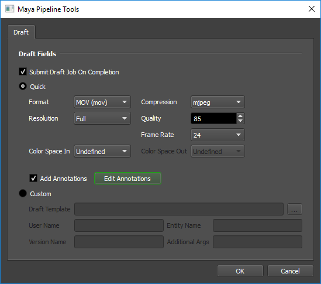
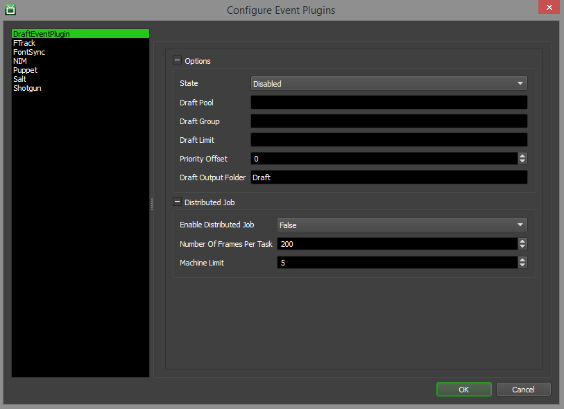

Draft / Quick Draft¶
Overview¶
Draft is a tool that provides simple and lightweight compositing and video processing functionality, designed to automate typical post-render tasks. It is implemented as a Python library (works across all platforms), which exposes functionality for use in Python scripts (which are referred to as Draft Templates). Draft is designed to be tightly integrated with Deadline, but it can also be used as a standalone tool.
Using Deadline’s Draft plugin, artists can automatically perform simple compositing operations on rendered frames after a render job finishes. They can also convert them to a different image format, or generate Quicktimes for dailies.
New Quick Draft options have been added to most of the job submitters that allow you to easily create movies from your rendered images or perform file conversions, without having to create a Draft template script. Instead, a generic Draft template that ships with Deadline is now used, and it lets you specify settings like Output Type, Codec, Resolution, and Frame Rate.
Licensing¶
Note
Starting with Deadline 10.1.23, Draft and Quick Draft do not require a license. The ONLY exception is that a Draft Pro license (FEATURE draft-pro-codec) is required if you are encoding to the 3rd party Avid DNxHD codec.
Submitting Dependent Draft Jobs¶
When submitting jobs to Deadline through many of our submitters, you have the option to have Deadline create a dependent Draft Job once the submitted job has finished rendering. You can either use the Quick Draft settings, which use a general Draft Template script that ships with Deadline, or you can specify a custom Template script.
Quick Draft Options¶
Note, the Draft EVENT plugin must be ENABLED for Quick Draft to work! Quick Draft jobs are submitted to Deadline as a job is completed.
The following options are available when using Quick Draft:
Format: The file format to use. For example, choose MOV to create a Quicktime from the rendered images, or JPEG to automatically convert the rendered images into JPEG files.
Compression: The compression to use for the movie formats.
Resolution: The resolution to use when creating the movie or converting the images.
Quality: The quality to use for the movie formats.
Frame Rate: The frame rate to use for the movie formats.
Color Space In: The color space in to use.
Color Space Out: The color space out to use.
Add Annotations: If enabled, the annotations from the Draft Annotations window will be added.
Edit Annotations: Opens the Draft Annotations window.
The Quick Draft options are controlled by a series of configuration text files:
Formats:
/<DeadlineRepository>/submission/Draft/Main/formats.txtCodecs:
/<DeadlineRepository>/submission/Draft/Main/codecs.txtResolutions:
/<DeadlineRepository>/submission/Draft/Main/resolutions.txtFrame Rate:
/<DeadlineRepository>/submission/Draft/Main/frameRates.txtRestrictions:
/<DeadlineRepository>/submission/Draft/Main/restrictions.txt
and some Python template files:
DraftCreateImages.py:
/<DeadlineRepository>/events/Draft/DraftQuickSubmission/DraftCreateImages.pyDraftCreateMovie.py:
/<DeadlineRepository>/events/Draft/DraftQuickSubmission/DraftCreateMovie.py
Custom Draft Options¶
The options available here are similar to those discussed in the Draft Application Plugin section. Although it might appear as though there are less options here than in the Monitor submitter, all the same information will get passed to the Draft template. This approach just allows us to automatically pull a lot of the needed info directly from the scene file and from information filled in elsewhere in the submitter.
Draft Annotations¶
The Draft Annotations window can be used to create and modify annotations that are then added onto your Draft job.

The viewport contains 6 annotation boxes that each correspond to an anchor (Northwest, NorthCenter, etc). The available options for modifying annotations are listed below:
General Options
These options make changes to the currently selected annotation.
Text: Changes the text for the current annotation.
Insert Token: When clicked a dropdown appears with the list of tokens that can be added. More information about each token is listed below.
Position: Selects the annotation to edit by it’s anchor. Different annotations can also be selected by clicking on an annotation box in the viewport. Annotations can be moved by clicking and dragging one annotation to another.
Update Annotations: Applies the changes in the Text box to the annotation which then updates the viewport. A shortcut for this is the Enter key.
Font Color: Changes the font color using the three spinner controls (each representing red, blue, and green respectively). A full color selector can be used by clicking the “…” button.
When the Insert Token button is selected a list of tokens is displayed. The different tokens that can be added are:
Frame: The frame number of the current image. Represented with $frame.
Time: The date and time when the image was created. Represented with $time.
Logo: Opens a file browser when selected in order to choose an image. The image is then scaled down and the opacity is reduced when added to the image. Represented with $logo.
Dimensions: The dimensions of the image. Represented with $dimensions.
Background Options
These options are always available:
Use Blank Background: Changes the viewport background to a blank image.
Use Image From File: Opens a file browser in order to choose an image, which is then used as the viewport background.
These options are only available when Use Blank Background is selected.
Resolution: Changes the resolution of the viewport background image. When the “custom” option is chosen the two spinners are enabled for choosing specific values.
Background Color: The color to use for the blank background of the viewport.
Zoom Options
Zoom Slider: Use the slider to zoom the viewport in and out. You can also use the mouse wheel to zoom in and out. If the image does not fit in the viewpoint, click the mouse wheel down to pan the image.
Reset Zoom: Resets the zoom within the viewport.
Fit Viewport: Zoom to see everything in the viewport.
Keep Fit: Zoom to see everything in the viewport, and force the viewport to not change. This allows the viewport to scale when resizing the Draft Annotations window.
Save/Load Options
These options can be found in the File menu.
Save Annotations: Saves the current annotations into a text file.
Load Annotations: Opens a file browser to select a text file with annotation information, then loads that information into the viewport.
Setup¶
Since Draft is being shipped alongside Deadline, there is not a whole lot of configuration that is needed for this event plugin to work (beyond simply changing the state of it). There are, however, options that allow you to select the priority, group and pool to which the Draft event plugin will submit Draft jobs.
To access these settings, simply enter Power User mode and select Tools -> Configure Events form the Monitor’s menu. From there, select the Draft entry from the list on the left.
There are two different categories of settings you can configure; they are described in more detail below.
Options
This section contains general high-level options that control the behaviour of the Deadline’s Draft integration.
State: There are three different states that an Event Plugin can be in: Global Enabled, Opt-In, and Disabled. If it is global enabled or opted in, as a job ‘completes’, the Draft job will be submitted to Deadline. Note the job must opt into Draft if this plugin is in the Opt-In state.
Draft Pool: The Group to which the Draft jobs will be submitted. If blank, the original job’s Group will be re-used.
Draft Group: The Pool to which the Draft jobs will be submitted. If blank, the original job’s Pool will be re-used.
Draft Limit: The Limit to which the Draft jobs will be submitted. If blank, no Limit will be used.
Priority Offset: This offset will be added to the original job’s priority, in order to determine the Draft job’s priority.
Draft Output Folder: The folder in which to put the Draft output, relative to the Draft input folder.
Distributed Job
Enable Distributed Job: Allow a Draft job to run on multiple machines.
Number Of Frames Per Task: The maximum number of frames allowed per Task of a Draft job.
Machine Limit: The maximum number of machines the job is allowed to run on if distributing jobs is allowed.
FAQ¶
Does Draft/Quick Draft need a license to run?
Starting with Deadline 10.1.23, Draft and Quick Draft do not require a license. See the Licensing section for an explanation.
Can I upgrade Deadline without upgrading the version of Draft I’m using?
Yes. See the Upgrading or Downgrading Draft section of the Upgrading or Downgrading Deadline documentation for more information.
Can I customize the Quick Draft UI/template script files?
Yes. However, Quick Draft is purposefully simple in it’s approach to create images and movies for very typical studio workflows. It is recommended to utilize the full-blown Draft Python API to achieve anything more complex than Quick Draft offers. Fundamentally, Quick Draft uses the same Python API under-the-hood compared to Draft.
Error Messages and Meanings¶
This is a collection of known Draft error messages and their meanings, as well as possible solutions. We want to keep this list as up to date as possible, so if you run into an error message that isn’t listed here, please contact Deadline Support and let us know.
Currently, no error messages have been reported for this event plugin.

{kind=link}
{kind=link}